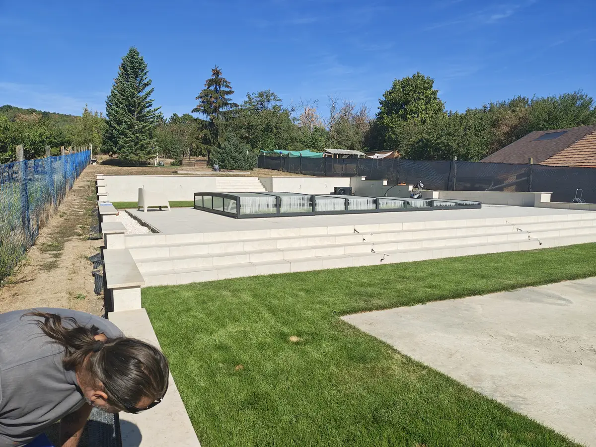
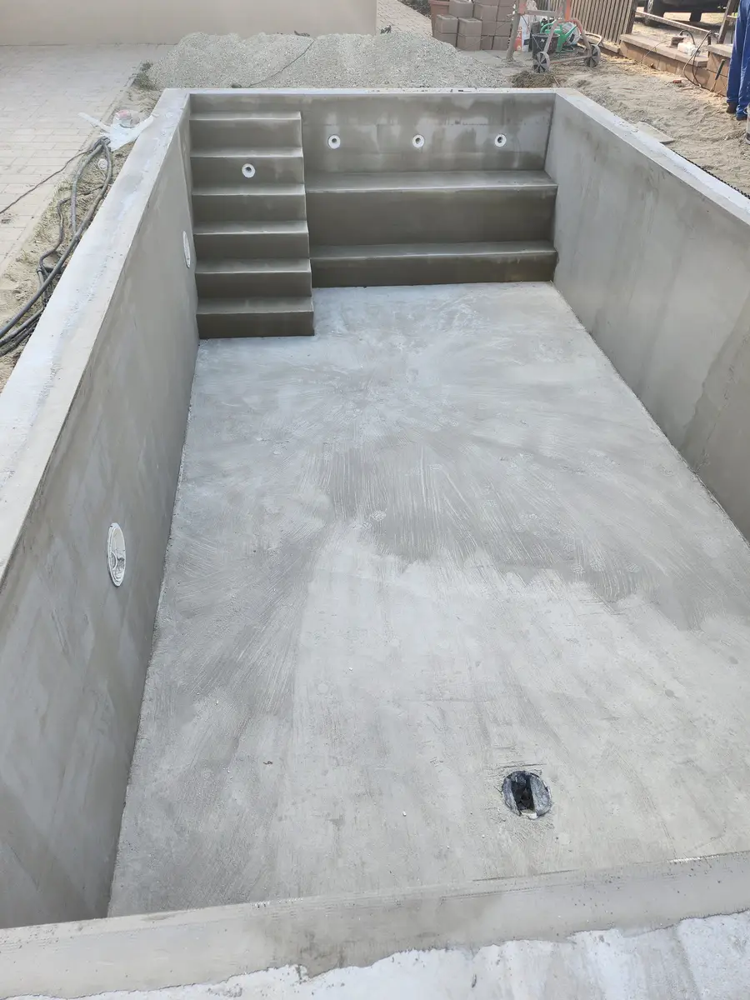
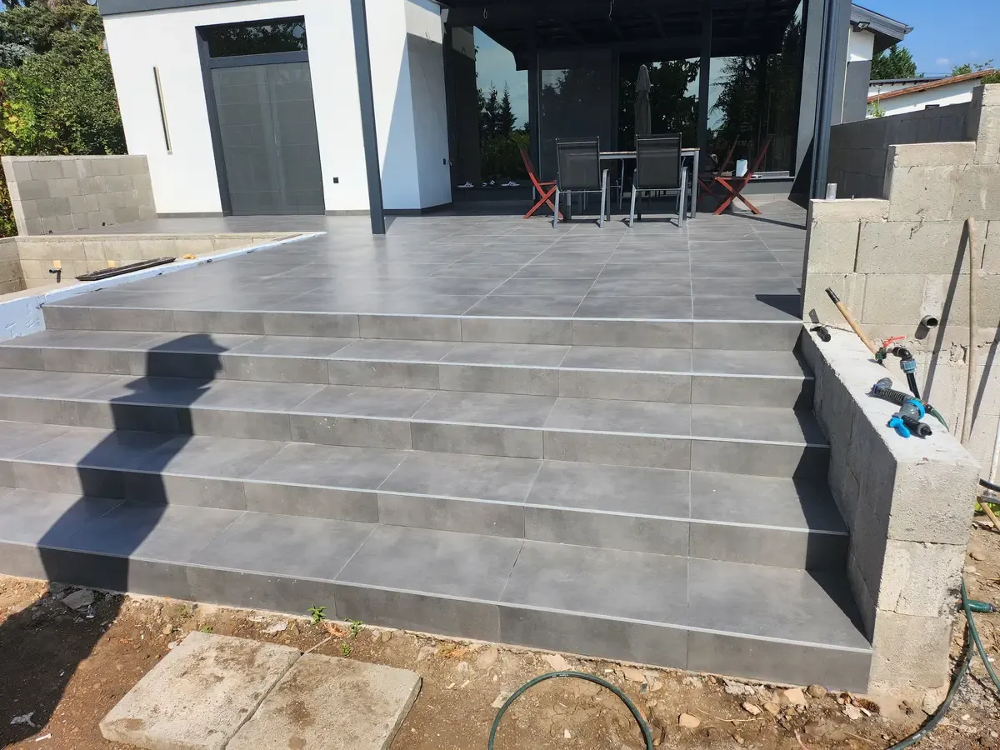
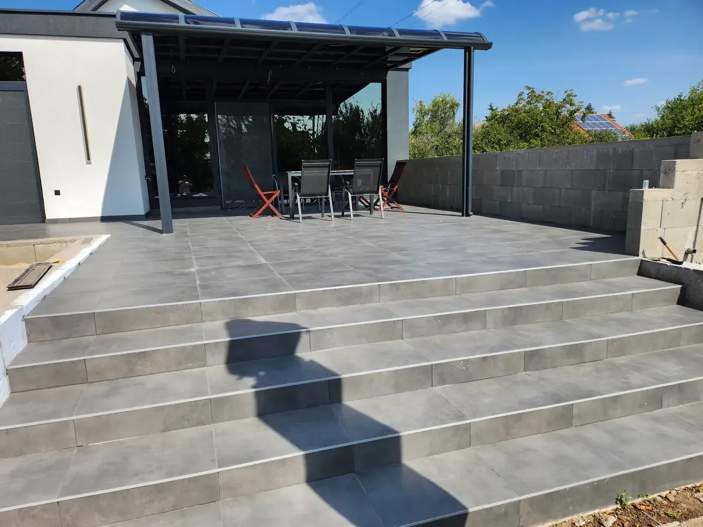
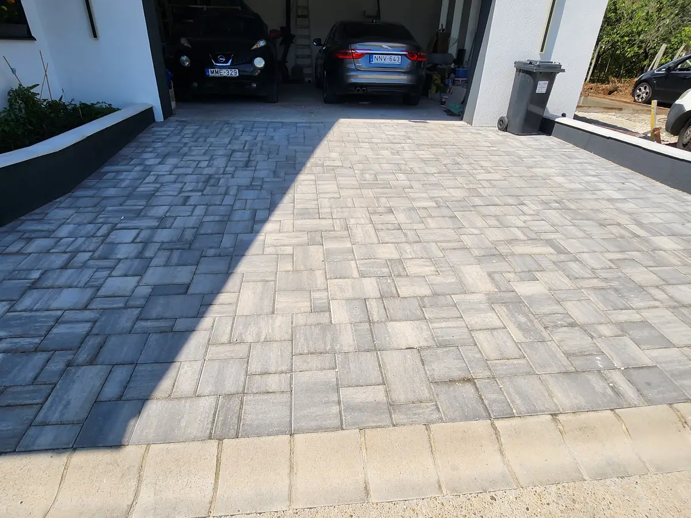
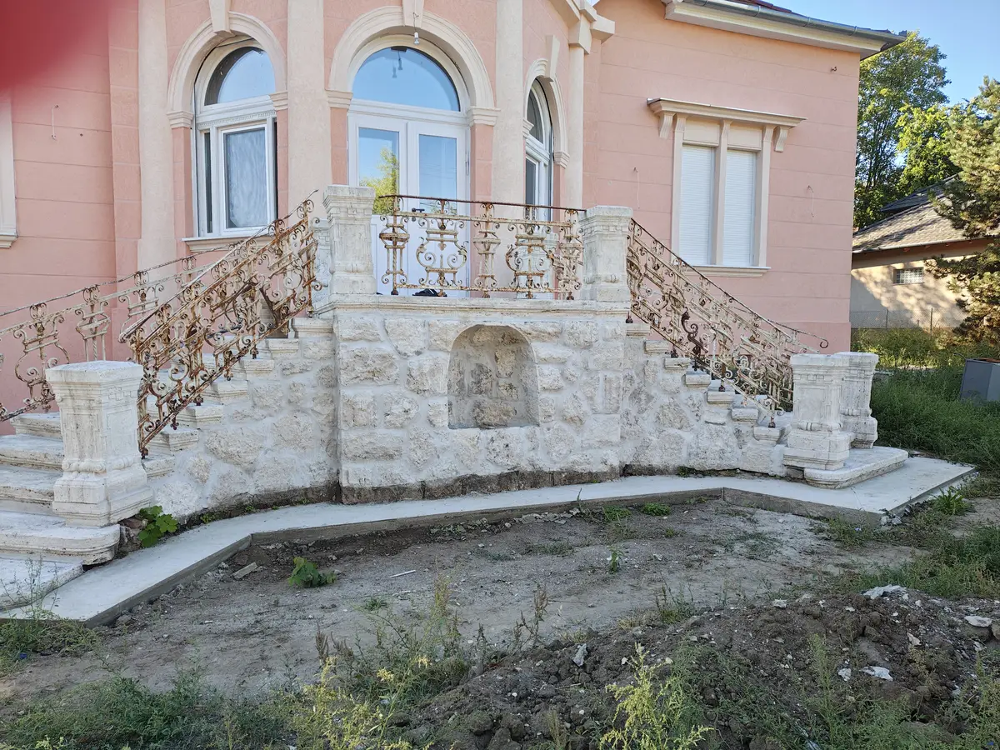
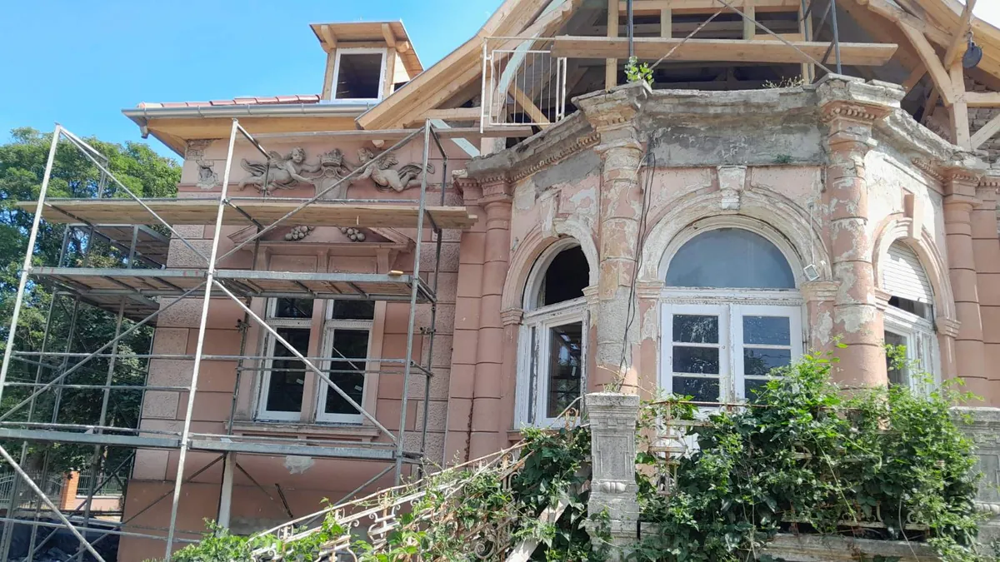
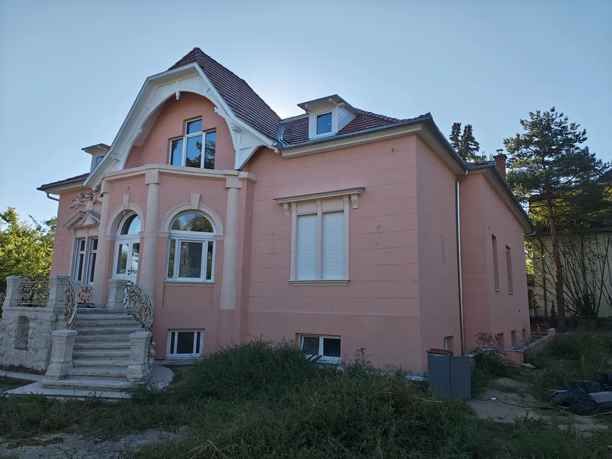

Építünk, felújítunk, medencét építünk — úgy, hogy közben önnek egy kapcsolattartója legyen, és ne öt különböző szakember. A generálkivitelezés lényege pontosan ez: az anyagokkal, a koordinációval és az ütemezéssel mi foglalkozunk.
Működési terület
Budapest és Pest megye
Kapcsolattartó
Varga Gyula, ügyvezető
Vállalás
Tételes írásbeli ajánlat, közös átadás
Első lépés
Telefonos egyeztetés, helyszíni felmérés
Szolgáltatások
Minden, ami egy ház építéséhez vagy felújításához kell
A felújítások és teljes kivitelezések részeként burkolási és épületgépészeti munkákat is végzünk — villanyszerelés, vízszerelés, fűtésszerelés és gázszerelés megbízott szakemberekkel.
Kiemelt munkák
Kész munkák, amiket megmutathatunk.
Valós helyszínek, átadott munkák — saját fotókon. Az építési fázisok az Átalakulások szekcióban láthatók.

PROJEKT — 01
Medence a kertben
MedenceépítésBurkolt kávaKész rendszer
Medencetest, gépház, fóliázás és burkolt káva — egy ütemezéssel, egy felelősséggel. A kész medence a kert természetes középpontja.


PROJEKT — 02
Kültéri lépcsők és támfalak
Kültéri munkákBeton szerkezetBurkolás
Kert méretében épített támfal és lépcsősor: zsaluzott betonszerkezet, majd finom, egyenletes burkolat. A kert szintjeit biztonságosan köti össze.



PROJEKT — 03
Lakóház homlokzattal, kerttel
HomlokzatHőszigetelésKert
Elkészült lakóház világos homlokzattal, rendezett kerttel és járdafelületekkel — a bejárástól az átadásig egy kézből.


Átalakulások
Előtte. Utána. Közte a kivitelezés.
Húzza el a csúszkát a fotón: ezt az állapotot kaptuk — ezt adtuk át. Csak azonos nézőpontból fotózott, valós párok.
Minden munka
Képgaléria a helyszínekről
Saját fotók az építkezéseinkről — kattintson rájuk a nagyításhoz.
Hogyan dolgozunk?
Négy lépés a kész munkáig
01
Kapcsolatfelvétel
Hívjon, és mondja el néhány mondatban a tervezett munkát — az első egyeztetés telefonon zajlik.
02
Felmérés
Közösen átbeszéljük az igényeket, és felmérjük a helyszínt. Itt derül ki, mi reális és mi a következő lépés.
03
Kivitelezés
A munka egyeztetett ütemezésben zajlik. A folyamatról naprakész marad, a kérdéseire mindig ugyanaz az ember válaszol.
04
Átadás
A kész munkát együtt nézzük át. A befejezés akkor van, ha minden részlet a helyén van.
Rólunk
Egy kapcsolattartó, egy felelős.
Házak és lakások teljes kivitelezésével, felújításával, medenceépítéssel és kültéri munkákkal foglalkozunk — Budapesten és Pest megyében. Az ajánlattól az átadásig ugyanaz az ember tartja a fonalat, aki a telefont is felveszi.
Közvetlen kommunikáció — nem call center, nem ügyintézők láncolata.
Teljes körű vállalás — a medencétől a homlokzatig egy kézből, egy ütemezésben.
Nem csak az első benyomás számít — ugyanúgy rá akarunk majd mutatni ezekre a munkákra évek múlva is.
Kapcsolattartó
Varga Gyula
Kivitelezés — ügyvezető, kapcsolattartó
Az első beszélgetéstől az átadásig vele egyeztetheti a részleteket — telefonon, e-mailben vagy a helyszínen.
A fő működési területünk Budapest és Pest megye, de a szomszédos településeken is dolgozunk. Ha bizonytalan, hívjon — és együtt megnézzük, megoldható-e.
Hogyan zajlik az első beszélgetés?
Hívjon, és röviden elmondhatja a tervezett munkát. Ezután egyeztetünk egy helyszíni felmérést, és ennek alapján készítjük el az ajánlatot.
Vállalnak kisebb munkát is?
Igen — a burkolás, a kerítésépítés vagy egyéb kisebb feladatok önállóan is megrendelhetők, nem csak teljes kivitelezés részeként.
Mikor kezdődhet a munka?
Ez a munka jellegétől és az előkészülettől függ. Az ajánlatban közös naptárba tesszük a kezdést és az ütemezést.
Kapcsolat
Hívjon — a többit telefonon egyeztetjük.
Röviden mondja el, mit tervez — közösen kiderül, mi reális és mi éri meg. Az első beszélgetés nem kötelez semmire.